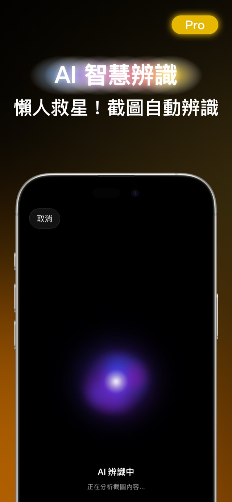
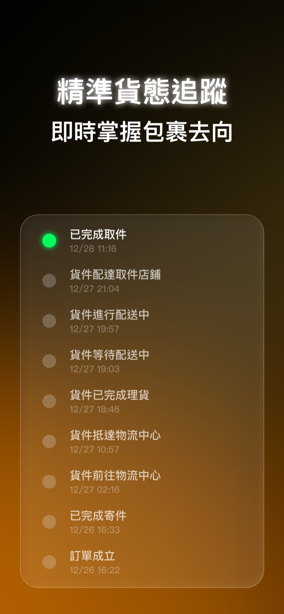
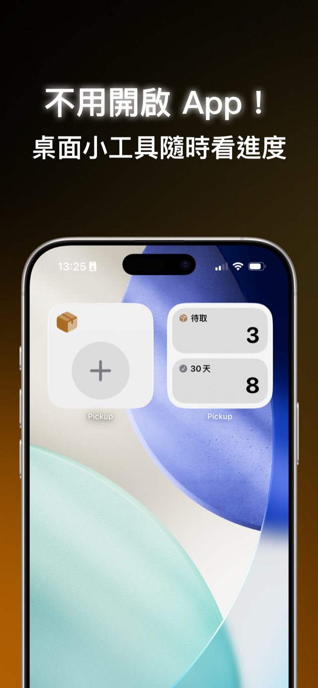
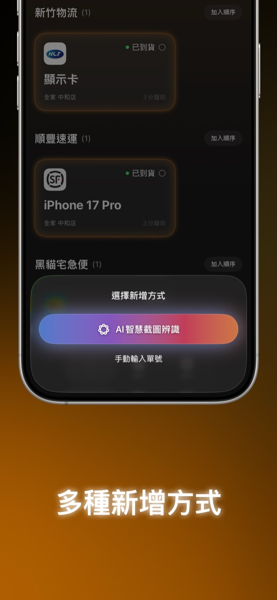
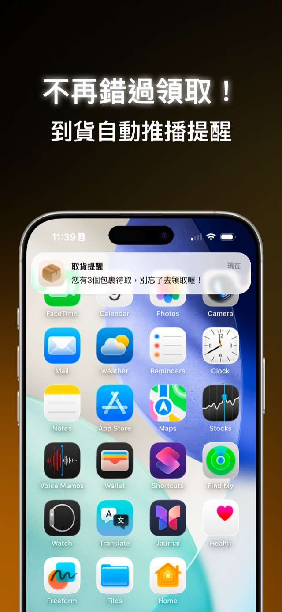

Pickup 取貨吧 · 包裹追蹤
所有包裹，一處掌握
超商取貨、宅配到府、海外代購——取貨吧把 21 家物流的貨態整合在同一個清單。AI 截圖辨識單號、到貨與取貨提醒、桌面小工具，不再錯過任何一件包裹。
免費下載 · 支援 iPhone 與 iPad · 使用 Apple 帳號登入同步





核心功能
從下單到取貨，都有人幫你盯著
新增包裹，幾秒就好
選購物平台、選取貨方式，物流商自動帶入；也能用 AI 截圖辨識、條碼掃描或手動輸入，單號格式自動判斷物流商。
貨態一目瞭然
從已出貨到抵達門市，狀態即時更新；超商包裹自動推算取貨期限，避免被退回。
提醒與小工具
狀態更新即時推播，每天早上 10 點提醒可取貨的包裹。桌面與鎖定畫面小工具、即時動態（Live Activity）隨時看進度。
跨裝置同步
使用 Apple 帳號登入，包裹清單與貨態即時同步到你的每一台 iOS 裝置。
支援物流
21 家物流商，持續更新
實際支援清單會隨版本調整，以 App 內顯示為準。
物流商分類清單
超商取貨
宅配與物流
電商物流
國際快遞
常見問題
FAQ
取貨吧支援哪些物流商？
目前支援 21 家：超商取貨（7-ELEVEN 交貨便、全家店到店、萊爾富、蝦皮店到店）、宅配與物流（黑貓宅急便、新竹物流、宅配通、中華郵政、嘉里快遞、東風速運、全球快遞、韻達、Pickupp、便利帶、新航通運）、電商物流（PChome 網家速配、嘉里大榮）、國際快遞（DHL、FedEx、UPS、順豐速運）。支援清單會隨版本更新，以 App 內顯示為準。
取貨吧是免費的嗎？
可以免費下載使用，免費方案有同時追蹤的包裹數量上限。升級 Pro 可解鎖更多包裹與進階功能，提供月訂閱、年訂閱與終身買斷三種方案；數量上限與價格以 App 內顯示為準。
AI 截圖辨識是什麼？
把訂單確認或取貨通知的截圖交給取貨吧，App 會自動辨識物流單號、物流商與取貨門市，不用手動輸入。也可以在其他 App 直接把截圖「分享」給取貨吧。
為什麼需要登入 Apple 帳號？
取貨吧使用 Apple 登入建立你的包裹清單，讓貨態能在雲端同步、跨裝置一致，也才能在包裹狀態更新時發送推播提醒。資料處理方式詳見取貨吧隱私政策。
會提醒我取貨嗎？
會。包裹狀態更新時即時推播，每天早上 10 點（台灣時間）提醒今天可以取的包裹；超商包裹會自動推算取貨期限。提醒可以在設定中個別開關。
信任與支援
隱私、支援與下載
隱私政策
取貨吧的資料處理方式（帳號、包裹資料、AI 辨識與同步）寫在專屬隱私政策。
查看取貨吧隱私政策
支援
使用問題與建議，來信必回。
寫信給開發者
App Store
正式名稱：Pickup 取貨吧｜包裹追蹤・貨態查詢工具
前往 App Store 頁面